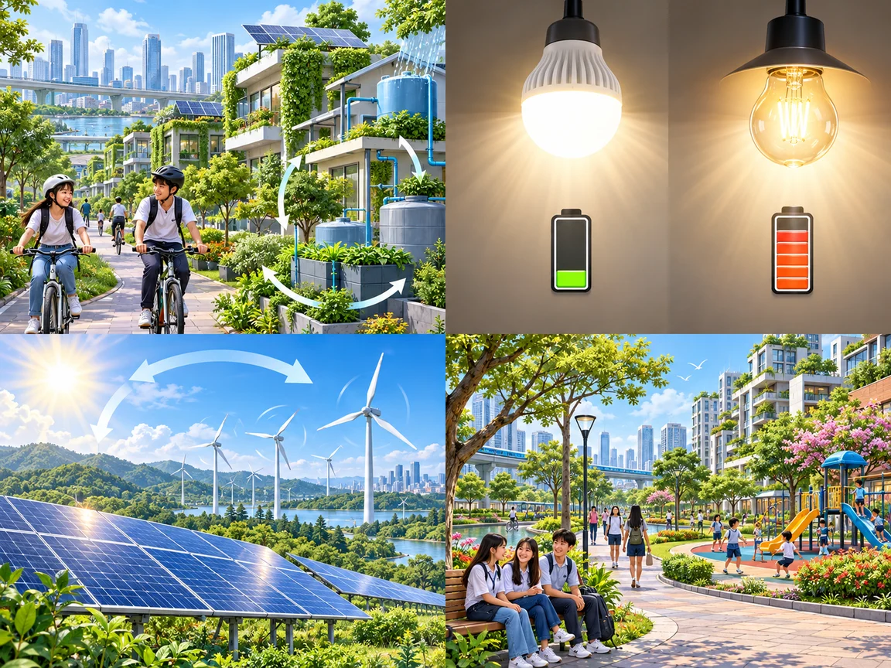
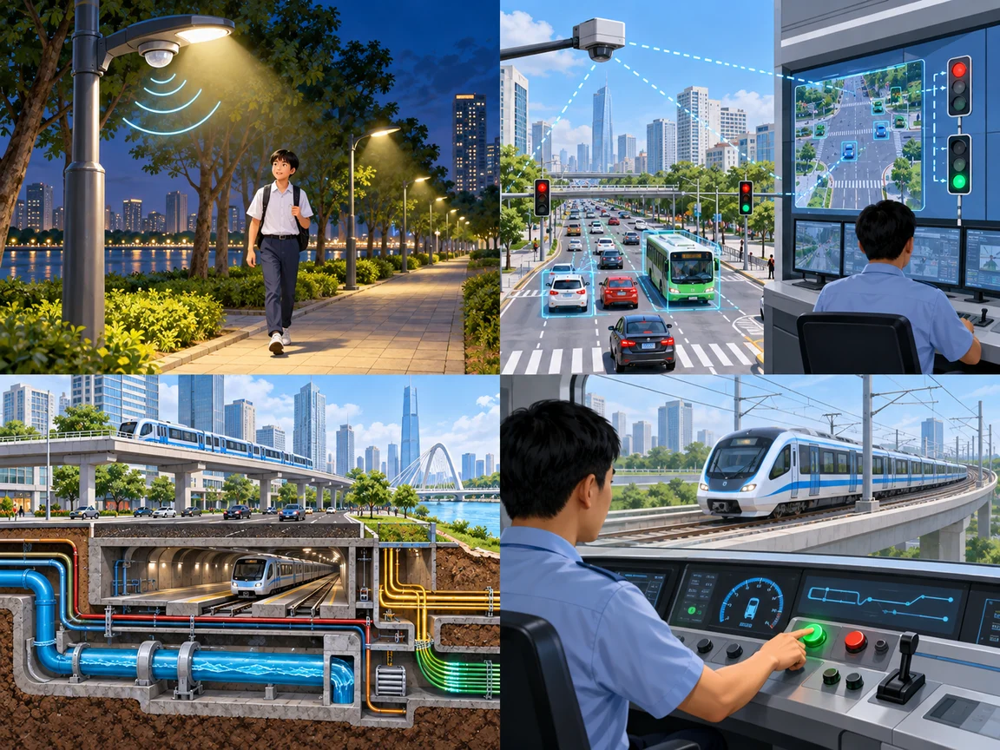
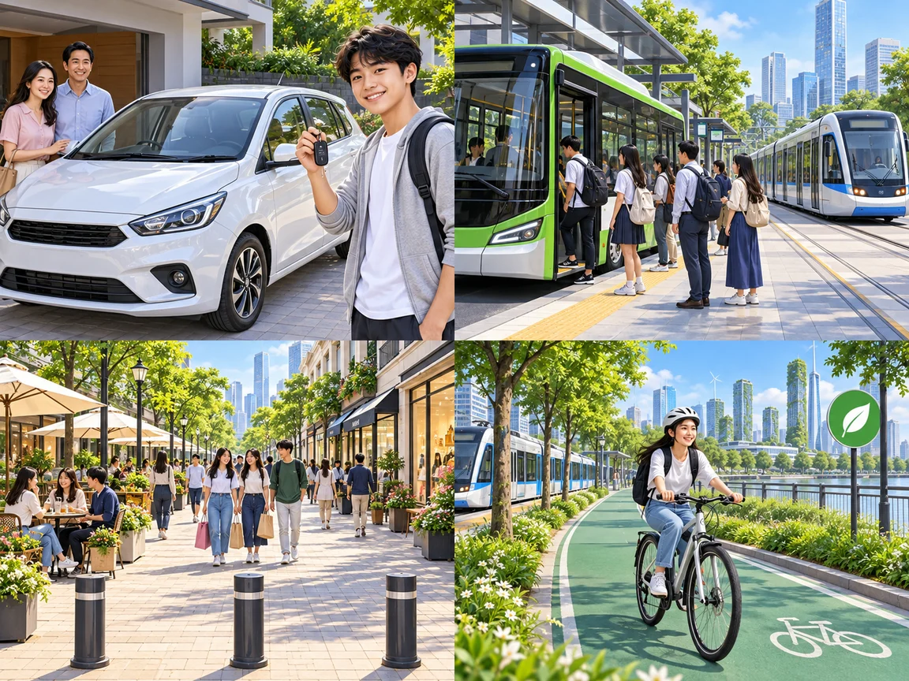

Characteristics of future cities
Lesson 3 — Reading
3Five stops in 45 minutes
- 👀
Kim’s game
Warm-up
5 min - 📚
Before reading
Discuss + new words
9 min - 📖
The article
Tasks 2–4
23 min - 💬
Discuss
Would you live there?
5 min - ✅
Wrap-up
3–2–1
3 min
Warm-up
Kim’s game
5 minutesRemember the city of 2050
- 🏙️ tall buildings
- 🤖 robots
- 💻 computers
- 🚌 electric buses
- ☀️ solar panels
- 🌳 green parks
- 🚲 cycle paths
- 🍃 clean air
What did you see?
Each team writes as many things as they can remember. The team with more correct words wins!
tall buildings · robots · computers · electric buses · solar panels · green parks · cycle paths · clean air (no pollution, no traffic jams)
Before reading
Discuss + new words
9 minutesThink about 2050

1. What will future cities look like?
2. Do you think they will be ‘smarter’ and more sustainable? Why / Why not?
Population · transport · architecture
- 👥
Population
Will cities be larger and more crowded?
- 🚲
Transport
More cars? More walking and cycling? Flying vehicles?
- 🏢
Architecture
Will all buildings be skyscrapers?
I think future cities will have … · There will be more / fewer …

sustainable
(adj) /səˈsteɪnəbl/ bền vững A sustainable city uses resources responsibly.
operate
(v) /ˈɒpəreɪt/ hoạt động, vận hành Computers operate the city’s transport system.efficient
(adj) /ɪˈfɪʃnt/ hiệu quả An efficient bus system saves time and energy.renewable
(adj) /rɪˈnjuːəbl/ có thể tái tạo Sunlight is a renewable energy source.
pedestrian zone
(n) /pəˈdestriən zəʊn/ khu vực dành cho người đi bộliveable
(adj) /ˈlɪvəbl/ đáng sống Parks and clean air make a city more liveable.Rub out and remember
1. Solar and wind energy are ______ — they never run out. renewable
2. A city with clean air and parks is nice to live in. It is ______. liveable
3. Cars are not allowed here. It is a ______. pedestrian zone
4. This machine works well and wastes no energy. It is very ______. efficient
While reading
The article · Tasks 2–4
23 minutesCharacteristics of future cities
By 2050 the world’s population is expected to reach 10 billion, and nearly 70 per cent of these people will live in cities. The cities of the future will be ‘smarter’ and more sustainable to cope with a growing population and improve people’s lives.
A smart city is a modern urban area that uses a range of technologies to provide services, solve problems, and support people better. The new technologies can help save time by predicting changes in the traffic and warning people of possible traffic jams.
Characteristics of future cities
They will also help cities operate more efficiently. For example, street lights can turn off when the streets are empty, and sensors can inform waste collection teams when the bins are full. These smart technologies will help save energy, reduce air pollution, and fight climate change.
Characteristics of future cities
Cities in the future will also be sustainable. They will include a lot of green space and become home to more plants and animals. Making room for biodiversity and nature can be done in various ways including underground and rooftop farming, green roofs, and roof gardens. As people will care more about the environment, most cities will use renewable and clean energy.
Characteristics of future cities
Modern infrastructure will also be more eco-friendly. Computer-controlled transport systems like electric buses and trains will produce less greenhouse gas emissions. In addition, more pedestrian zones for walking and cycle paths will be made available for people in all neighbourhoods.
These features will make future cities more liveable and will provide a high quality of life to city dwellers.
The TWO characteristics? smart · sustainable
Use the context clues
1. operate more efficiently A
A. to work better without wasting time, money, or energy
B. to control a machine without wasting resources
C. to cut a body open for medical reasons in a more careful way
2. sensors A
A. devices that can react to light, heat, or pressure
B. instruments that can be played by people
C. devices for discovering rubbish
Use the context clues
3. pedestrian zones C
A. areas for cars only
B. areas for electric buses
C. areas for walking only
4. liveable B
A. suitable for farming
B. nice to live in
C. good for the environment
Look for paraphrases
- About 70 million people will live in cities by 2050. FALSE nearly 70 per cent of 10 billion people
- Smart cities use modern technologies to save time and provide better services. TRUE
Look for paraphrases
- City dwellers will be able to grow vegetables underground or in roof gardens. TRUE
- Space for walking and cycling will be replaced with computer-controlled transport systems. FALSE more pedestrian zones and cycle paths
Cities of the future
Smart
Modern technologies are used to (1) support people better.
Smart devices help cities (2) operate more efficiently.
Sustainable
Cities will include a lot of (3) green space and become home to more plants and animals.
Eco-friendly (4) infrastructure will reduce greenhouse gas emissions.
After reading
Would you live there?
5 minutesWould you like to live in a smart and sustainable city? Why / Why not?
Yes 👍
cleaner air · convenient transport · more green space · smart services
Not sure 🤔
privacy · cost of living · too much technology · crowded
I would / wouldn’t like to live in … because …
Two points of view
I would like to live in a smart city because of its modern infrastructure. I’d love to see how smart technologies make city dwellers’ lives better.
I wouldn’t, because life will become very expensive. Buying or renting a home will cost a lot, and some services may be hard to afford.
Before you go…
- 🏙️
3
features of future cities
- 📚
2
new words from today
- 💡
1
reason to live there — or not
Homework
1. Write a short paragraph about the smart and sustainable city you would like to live in.
2. Do the Reading exercises in the workbook.
3. Get ready for Lesson 4 — Speaking.